Comparing DESeq2 and edgeR with VISTA
VISTA Development Team
VISTA-comparison.RmdIntroduction
DESeq2 and edgeR are the two most widely used tools for differential expression (DE) analysis of RNA-seq data. Both use negative binomial models but differ in normalization, dispersion estimation, and statistical testing, which can lead to different sets of differentially expressed genes (DEGs).
This vignette demonstrates how to use VISTA to run both methods on the same dataset and systematically compare their results using built-in visualization functions.
What you will learn
- How to create VISTA objects with DESeq2 and edgeR backends
- How to compare DEG counts, fold-change estimates, and significance calls
- How to identify concordant and discordant genes between methods
- How to visualize method agreement with volcano plots, scatter plots, Venn diagrams, and heatmaps
Data
We use the built-in VISTA example data derived from the airway dataset (Himes et al. 2014), which contains RNA-seq counts from human airway smooth muscle cells treated with dexamethasone.
data("count_data", package = "VISTA")
data("sample_metadata", package = "VISTA")
dim(count_data)
#> [1] 63677 9
head(sample_metadata[, c("sample_names", "cond_long")])
#> # A tibble: 6 × 2
#> sample_names cond_long
#> <chr> <chr>
#> 1 SRR1039508 control
#> 2 SRR1039509 treatment1
#> 3 SRR1039512 control
#> 4 SRR1039513 treatment1
#> 5 SRR1039516 control
#> 6 SRR1039517 treatment1Create VISTA Objects
We create two VISTA objects from the same data — one using DESeq2 and one using edgeR — with identical cutoffs so that any differences in results are attributable to the method.
vista_deseq <- create_vista(
counts = count_data,
sample_info = sample_metadata,
column_geneid = "gene_id",
group_column = "dex",
group_numerator = "trt",
group_denominator = "untrt",
method = "deseq2",
log2fc_cutoff = 1,
pval_cutoff = 0.05,
min_counts = 10,
min_replicates = 1
)
vista_deseq
#> class: VISTA
#> dim: 18086 8
#> metadata(11): de_results de_summary ... design comparison
#> assays(1): norm_counts
#> rownames(18086): ENSG00000000003 ENSG00000000419 ... ENSG00000273487
#> ENSG00000273488
#> rowData names(1): baseMean
#> colnames(8): SRR1039508 SRR1039509 ... SRR1039520 SRR1039521
#> colData names(14): SampleName cell ... sizeFactor sample_names
vista_edger <- create_vista(
counts = count_data,
sample_info = sample_metadata,
column_geneid = "gene_id",
group_column = "dex",
group_numerator = "trt",
group_denominator = "untrt",
method = "edger",
log2fc_cutoff = 1,
pval_cutoff = 0.05,
min_counts = 10,
min_replicates = 1
)
vista_edger
#> class: VISTA
#> dim: 15557 8
#> metadata(11): de_results de_summary ... design comparison
#> assays(1): norm_counts
#> rownames(15557): ENSG00000000003 ENSG00000000419 ... ENSG00000273382
#> ENSG00000273486
#> rowData names(1): baseMean
#> colnames(8): SRR1039508 SRR1039509 ... SRR1039520 SRR1039521
#> colData names(13): SampleName cell ... groups sample_namesBoth objects contain the same comparison (treated vs untreated):
names(comparisons(vista_deseq))
#> [1] "trt_VS_untrt"
names(comparisons(vista_edger))
#> [1] "trt_VS_untrt"DEG Summary Comparison
DEG counts per method
A quick way to compare the methods is to count the number of up- and down-regulated genes detected by each.
p_deseq <- get_deg_count_barplot(vista_deseq) +
ggtitle("DESeq2") +
theme(plot.title = element_text(hjust = 0.5, face = "bold"))
p_edger <- get_deg_count_barplot(vista_edger) +
ggtitle("edgeR") +
theme(plot.title = element_text(hjust = 0.5, face = "bold"))
p_deseq + p_edger +
plot_annotation(title = "Number of DEGs by Method")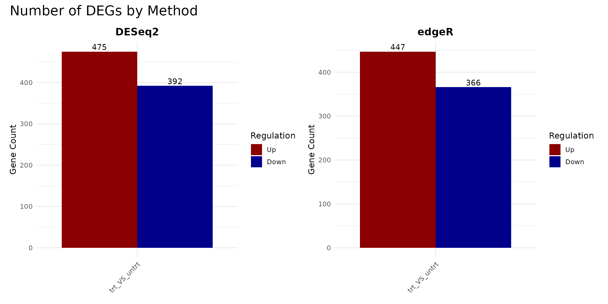
DEG composition (pie and donut)
pie_deseq <- get_deg_count_pieplot(vista_deseq, facet_by = "none") +
ggtitle("DESeq2 (Pie)") +
theme(plot.title = element_text(hjust = 0.5, face = "bold"))
pie_edger <- get_deg_count_pieplot(vista_edger, facet_by = "none") +
ggtitle("edgeR (Pie)") +
theme(plot.title = element_text(hjust = 0.5, face = "bold"))
donut_deseq <- get_deg_count_donutplot(vista_deseq, facet_by = "none") +
ggtitle("DESeq2 (Donut)") +
theme(plot.title = element_text(hjust = 0.5, face = "bold"))
donut_edger <- get_deg_count_donutplot(vista_edger, facet_by = "none") +
ggtitle("edgeR (Donut)") +
theme(plot.title = element_text(hjust = 0.5, face = "bold"))
(pie_deseq + pie_edger) / (donut_deseq + donut_edger)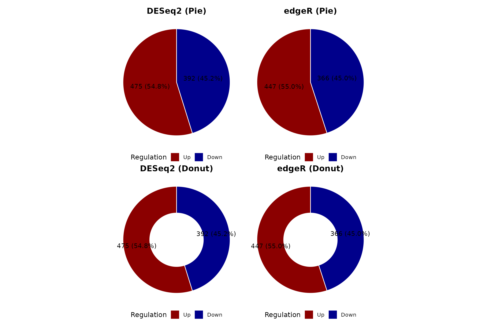
Tabular summary
summarise_degs <- function(vista, method_name) {
comps <- comparisons(vista)
do.call(rbind, lapply(names(comps), function(comp) {
de <- as.data.frame(comps[[comp]])
n_up <- sum(de$regulation == "Up", na.rm = TRUE)
n_down <- sum(de$regulation == "Down", na.rm = TRUE)
data.frame(
Method = method_name,
Comparison = comp,
Up = n_up,
Down = n_down,
Total_DEG = n_up + n_down,
Tested = nrow(de)
)
}))
}
deg_summary_table <- rbind(
summarise_degs(vista_deseq, "DESeq2"),
summarise_degs(vista_edger, "edgeR")
)
knitr::kable(deg_summary_table, row.names = FALSE,
caption = "DEG counts by method and comparison")| Method | Comparison | Up | Down | Total_DEG | Tested |
|---|---|---|---|---|---|
| DESeq2 | trt_VS_untrt | 475 | 392 | 867 | 18086 |
| edgeR | trt_VS_untrt | 447 | 366 | 813 | 15557 |
Volcano Plots
Volcano plots show the relationship between fold-change magnitude and statistical significance. Comparing them side-by-side reveals differences in how each method distributes p-values and fold-change estimates.
comp1 <- names(comparisons(vista_deseq))[1]
v_deseq <- get_volcano_plot(vista_deseq, sample_comparison = comp1) +
ggtitle(paste("DESeq2 -", comp1))
v_edger <- get_volcano_plot(vista_edger, sample_comparison = comp1) +
ggtitle(paste("edgeR -", comp1))
v_deseq + v_edger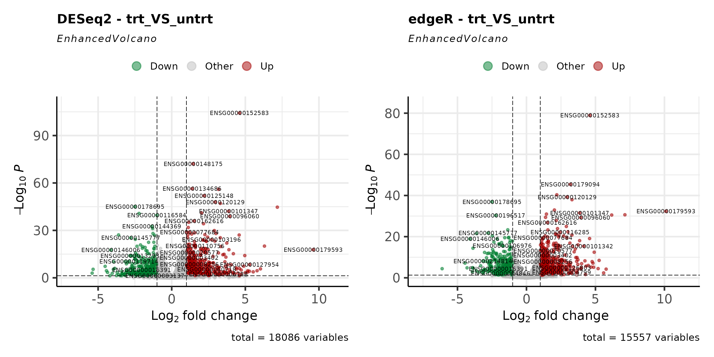
MA Plots
MA plots display fold-change as a function of mean expression. They are useful for assessing whether low-expression genes show inflated fold-changes and how each method handles shrinkage.
ma_deseq <- get_ma_plot(vista_deseq, sample_comparison = comp1) +
ggtitle(paste("DESeq2 -", comp1))
ma_edger <- get_ma_plot(vista_edger, sample_comparison = comp1) +
ggtitle(paste("edgeR -", comp1))
ma_deseq + ma_edger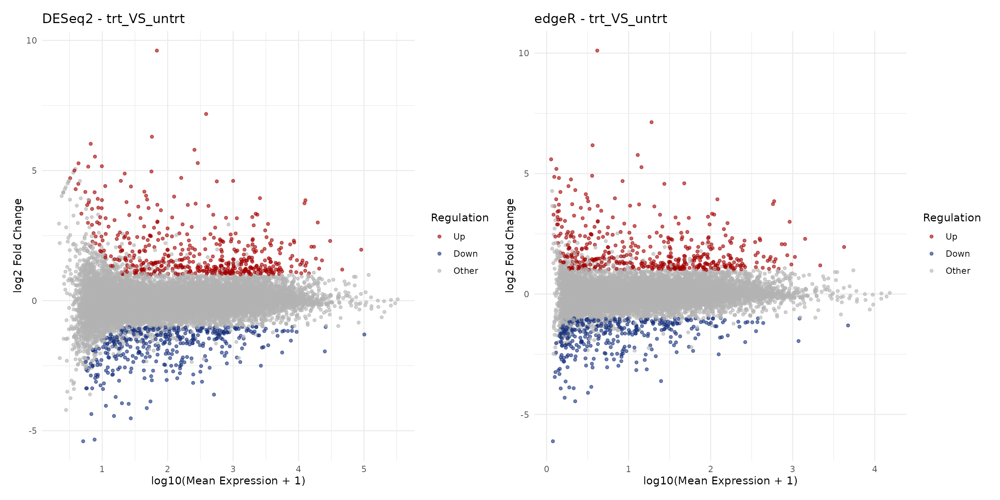
Fold-Change Concordance
Log2 fold-change scatter plot
A direct comparison of fold-change estimates between methods reveals their overall concordance. Genes on the diagonal have identical estimates; deviations indicate method-specific differences.
# Extract DE results for the first comparison
de_deseq <- as.data.frame(comparisons(vista_deseq)[[comp1]])
de_edger <- as.data.frame(comparisons(vista_edger)[[comp1]])
# Merge on gene_id
merged <- merge(
de_deseq[, c("gene_id", "log2fc", "padj", "regulation")],
de_edger[, c("gene_id", "log2fc", "padj", "regulation")],
by = "gene_id",
suffixes = c("_deseq2", "_edger")
)
# Concordance category
merged$concordance <- case_when(
merged$regulation_deseq2 == "Up" & merged$regulation_edger == "Up" ~ "Both Up",
merged$regulation_deseq2 == "Down" & merged$regulation_edger == "Down" ~ "Both Down",
merged$regulation_deseq2 == "Other" & merged$regulation_edger == "Other" ~ "Not DE",
TRUE ~ "Discordant"
)
conc_colors <- c(
"Both Up" = "#D73027",
"Both Down" = "#4575B4",
"Discordant" = "#FFC107",
"Not DE" = "grey80"
)
# Correlation
r_val <- cor(merged$log2fc_deseq2, merged$log2fc_edger,
use = "complete.obs", method = "pearson")
ggplot(merged, aes(x = log2fc_deseq2, y = log2fc_edger, color = concordance)) +
geom_point(alpha = 0.4, size = 0.8) +
geom_abline(slope = 1, intercept = 0, linetype = "dashed", color = "black") +
scale_color_manual(values = conc_colors) +
annotate("text", x = -Inf, y = Inf, hjust = -0.1, vjust = 1.3,
label = paste0("Pearson r = ", round(r_val, 3)),
fontface = "italic", size = 4) +
labs(
x = "log2 Fold Change (DESeq2)",
y = "log2 Fold Change (edgeR)",
color = "Concordance",
title = paste("Fold-Change Agreement:", comp1)
) +
theme_minimal(base_size = 16) +
theme(legend.position = "bottom")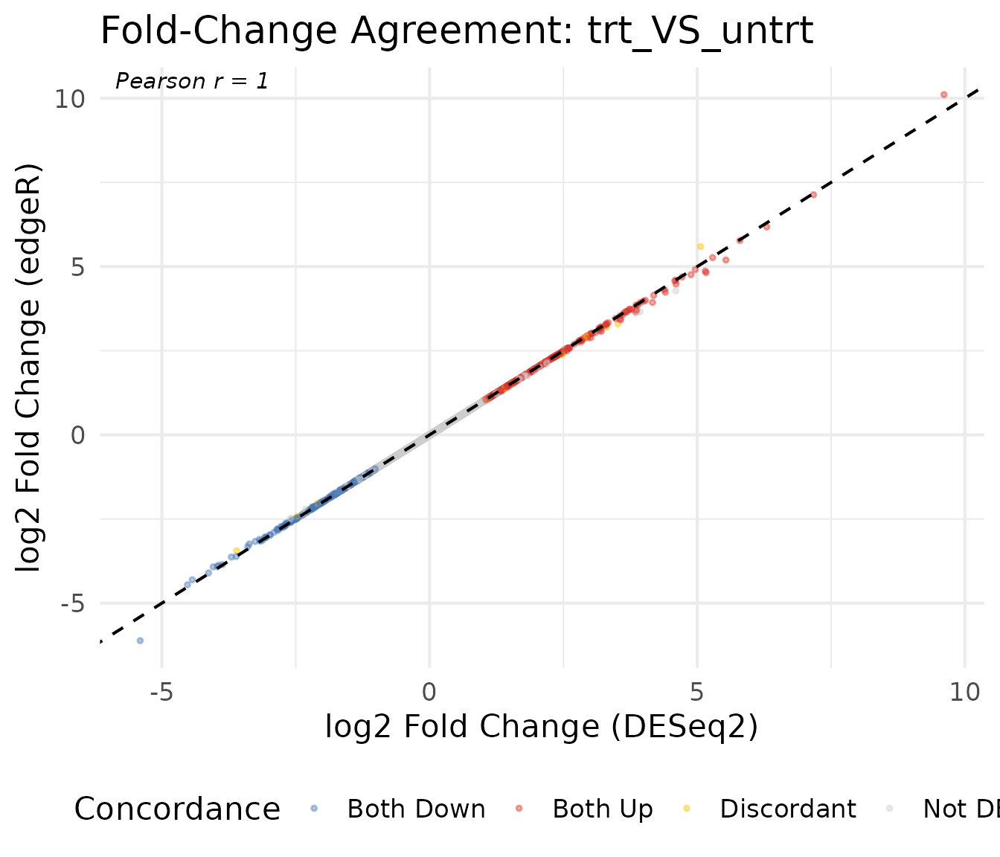
Concordance summary table
conc_table <- merged %>%
count(concordance) %>%
mutate(pct = round(n / sum(n) * 100, 1)) %>%
arrange(desc(n))
knitr::kable(conc_table, col.names = c("Category", "Genes", "Percent"),
caption = "Concordance between DESeq2 and edgeR calls")| Category | Genes | Percent |
|---|---|---|
| Not DE | 14726 | 94.7 |
| Both Up | 438 | 2.8 |
| Both Down | 354 | 2.3 |
| Discordant | 39 | 0.3 |
P-value Comparison
P-value scatter plot
Comparing adjusted p-values (on the -log10 scale) shows whether both methods agree on which genes are most significant.
merged$neg_log10_padj_deseq2 <- -log10(merged$padj_deseq2 + 1e-300)
merged$neg_log10_padj_edger <- -log10(merged$padj_edger + 1e-300)
ggplot(merged, aes(x = neg_log10_padj_deseq2, y = neg_log10_padj_edger,
color = concordance)) +
geom_point(alpha = 0.3, size = 0.8) +
geom_abline(slope = 1, intercept = 0, linetype = "dashed", color = "black") +
scale_color_manual(values = conc_colors) +
labs(
x = "-log10(padj) DESeq2",
y = "-log10(padj) edgeR",
color = "Concordance",
title = paste("Adjusted P-value Agreement:", comp1)
) +
theme_minimal(base_size = 16) +
theme(legend.position = "bottom")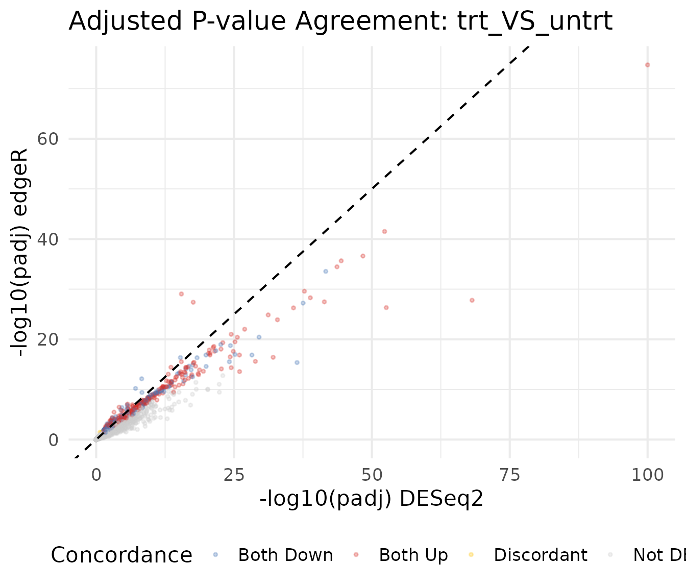
P-value distribution
The distribution of raw p-values provides a diagnostic for each method. A well-calibrated test produces a uniform distribution under the null, with a spike near zero for truly DE genes.
pval_df <- rbind(
data.frame(pvalue = de_deseq$pvalue, Method = "DESeq2"),
data.frame(pvalue = de_edger$pvalue, Method = "edgeR")
)
ggplot(pval_df, aes(x = pvalue, fill = Method)) +
geom_histogram(bins = 50, alpha = 0.7, position = "identity") +
facet_wrap(~Method) +
scale_fill_manual(values = c("DESeq2" = "#1B9E77", "edgeR" = "#D95F02")) +
labs(
x = "Raw P-value",
y = "Count",
title = "P-value Distribution by Method"
) +
theme_minimal(base_size = 16) +
theme(legend.position = "none")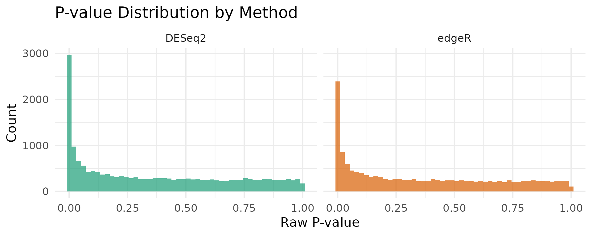
Venn Diagram of DEGs
VISTA provides get_deg_venn_diagram() for comparing DEG
overlap across comparisons within a single object. For cross-method
comparison (DESeq2 vs edgeR), we use
get_genes_by_regulation() to extract gene lists from each
VISTA object, then pass them to ggvenn.
Upregulated genes
# Extract upregulated gene sets using VISTA's accessor
up_deseq <- get_genes_by_regulation(
vista_deseq, sample_comparisons = comp1, regulation = "Up"
)[[1]]
up_edger <- get_genes_by_regulation(
vista_edger, sample_comparisons = comp1, regulation = "Up"
)[[1]]
venn_up <- list(DESeq2 = up_deseq, edgeR = up_edger)
ggvenn::ggvenn(venn_up, fill_color = c("#1B9E77", "#D95F02")) +
ggtitle(paste("Upregulated Genes:", comp1))Downregulated genes
down_deseq <- get_genes_by_regulation(
vista_deseq, sample_comparisons = comp1, regulation = "Down"
)[[1]]
down_edger <- get_genes_by_regulation(
vista_edger, sample_comparisons = comp1, regulation = "Down"
)[[1]]
venn_down <- list(DESeq2 = down_deseq, edgeR = down_edger)
ggvenn::ggvenn(venn_down, fill_color = c("#1B9E77", "#D95F02")) +
ggtitle(paste("Downregulated Genes:", comp1))Normalization Comparison
DESeq2 uses median-of-ratios normalization while edgeR uses TMM (trimmed mean of M-values). Comparing the resulting normalized count distributions helps assess whether normalization choices drive downstream differences.
nc_deseq <- norm_counts(vista_deseq)
nc_edger <- norm_counts(vista_edger)
# Use common genes
common_genes <- intersect(rownames(nc_deseq), rownames(nc_edger))
sample_cols <- intersect(colnames(nc_deseq), colnames(nc_edger))
norm_df <- rbind(
data.frame(
log2_count = as.vector(log2(nc_deseq[common_genes, sample_cols] + 1)),
Method = "DESeq2"
),
data.frame(
log2_count = as.vector(log2(nc_edger[common_genes, sample_cols] + 1)),
Method = "edgeR"
)
)
ggplot(norm_df, aes(x = log2_count, fill = Method)) +
geom_density(alpha = 0.5) +
scale_fill_manual(values = c("DESeq2" = "#1B9E77", "edgeR" = "#D95F02")) +
labs(
x = "log2(Normalized Count + 1)",
y = "Density",
title = "Normalized Count Distribution"
) +
theme_minimal(base_size = 16)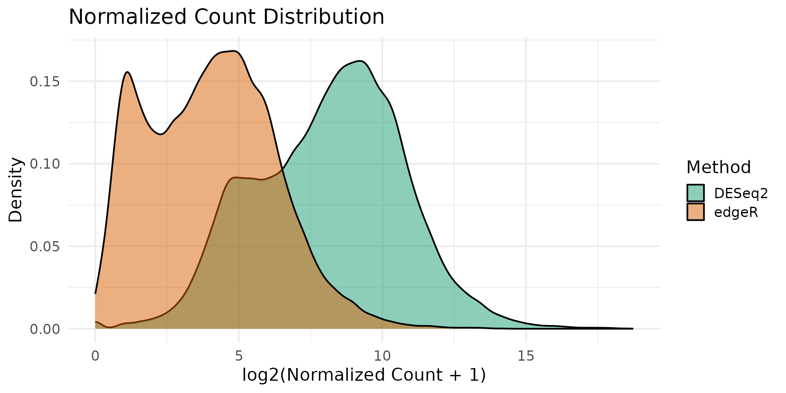
Sample-level comparison
# Compare normalized counts for each sample
sample_norm_df <- data.frame(
DESeq2 = as.vector(log2(nc_deseq[common_genes, sample_cols] + 1)),
edgeR = as.vector(log2(nc_edger[common_genes, sample_cols] + 1)),
Sample = rep(sample_cols, each = length(common_genes))
)
ggplot(sample_norm_df, aes(x = DESeq2, y = edgeR)) +
geom_point(alpha = 0.05, size = 0.3) +
geom_abline(slope = 1, intercept = 0, linetype = "dashed", color = "red") +
facet_wrap(~Sample, ncol = 3) +
labs(
x = "log2(DESeq2 Normalized + 1)",
y = "log2(edgeR Normalized + 1)",
title = "Per-Sample Normalized Counts"
) +
theme_minimal(base_size = 16)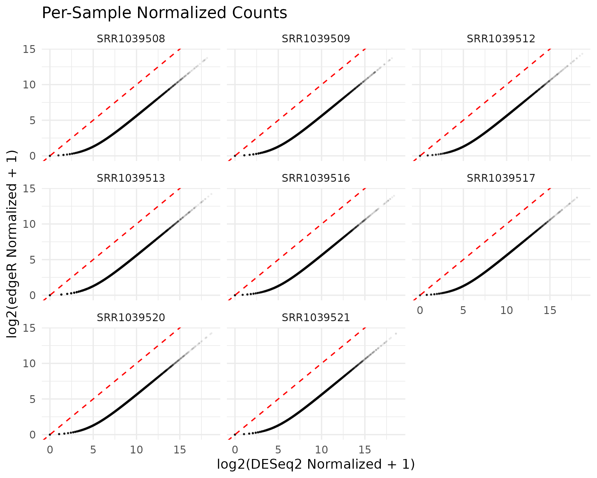
PCA Comparison
Principal component analysis reveals whether the two normalization strategies preserve the same sample-level structure.
pca_deseq <- get_pca_plot(vista_deseq) +
ggtitle("PCA: DESeq2 Normalization")
pca_edger <- get_pca_plot(vista_edger) +
ggtitle("PCA: edgeR Normalization")
pca_deseq + pca_edger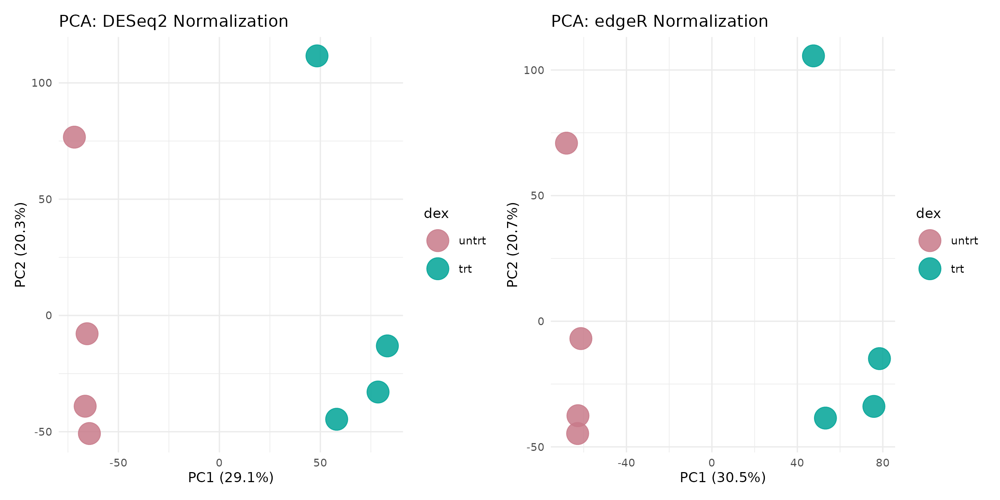
Expression of Discordant Genes
Genes called as DEG by one method but not the other are of particular interest. Visualizing their expression patterns helps assess whether method-specific calls are biologically meaningful.
deseq_only <- setdiff(all_deseq, all_edger)
edger_only <- setdiff(all_edger, all_deseq)
cat("DEGs unique to DESeq2:", length(deseq_only), "\n")
#> DEGs unique to DESeq2: 75
cat("DEGs unique to edgeR:", length(edger_only), "\n")
#> DEGs unique to edgeR: 21
cat("DEGs shared:", length(intersect(all_deseq, all_edger)), "\n")
#> DEGs shared: 792Expression of DESeq2-only genes
if (length(deseq_only) >= 3) {
# Show top genes by fold change
deseq_only_de <- de_deseq[de_deseq$gene_id %in% deseq_only, ]
top_deseq_only <- head(
deseq_only_de[order(-abs(deseq_only_de$log2fc)), "gene_id"],
6
)
get_expression_boxplot(vista_deseq, genes = top_deseq_only) +
ggtitle("Top DESeq2-Only DEGs (by |log2FC|)")
}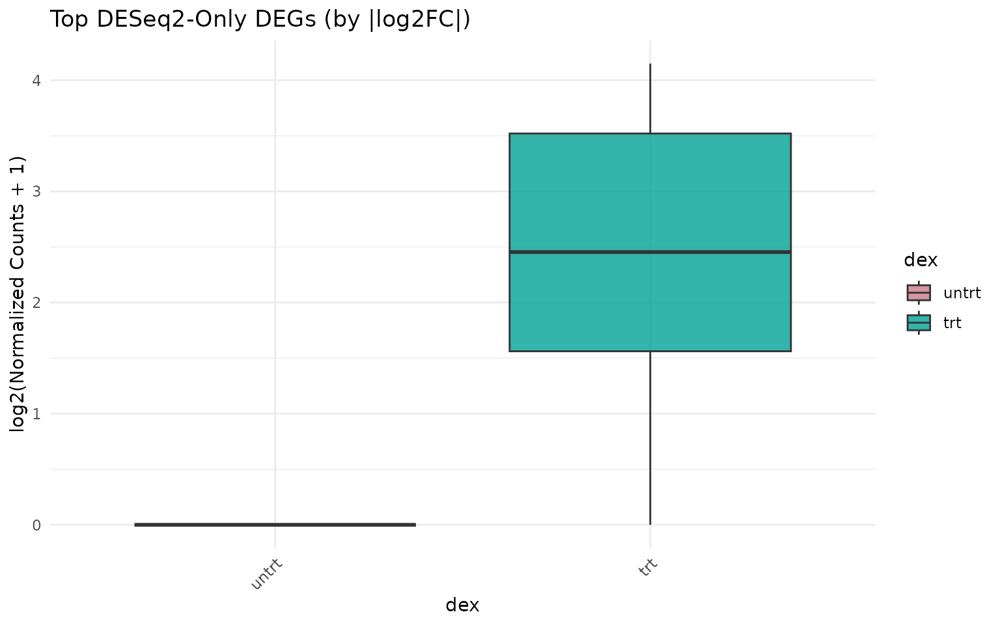
Expression of edgeR-only genes
if (length(edger_only) >= 3) {
edger_only_de <- de_edger[de_edger$gene_id %in% edger_only, ]
top_edger_only <- head(
edger_only_de[order(-abs(edger_only_de$log2fc)), "gene_id"],
6
)
get_expression_boxplot(vista_edger, genes = top_edger_only) +
ggtitle("Top edgeR-Only DEGs (by |log2FC|)")
}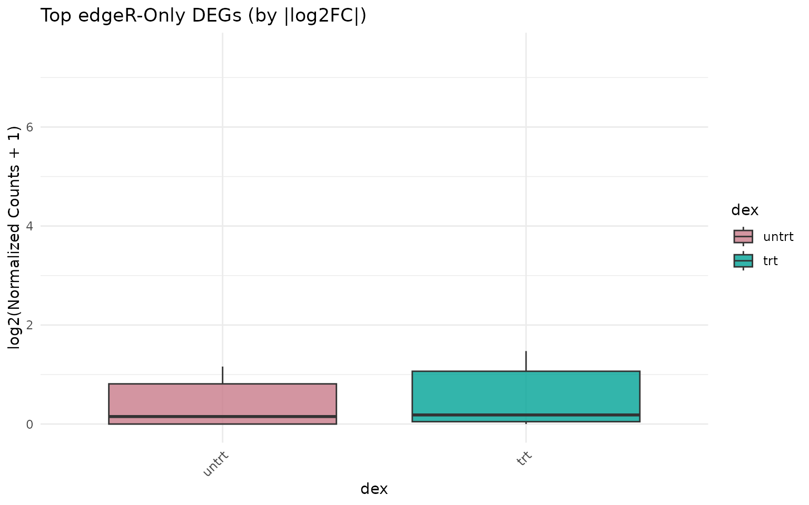
Sensitivity Analysis: Effect of Cutoffs
Different significance and fold-change thresholds can shift the balance between methods. Here we sweep across a range of cutoffs.
sweep_cutoffs <- function(de_deseq, de_edger, fc_vals, pval_cut = 0.05) {
results <- lapply(fc_vals, function(fc) {
n_deseq <- sum(
abs(de_deseq$log2fc) >= fc & de_deseq$padj < pval_cut,
na.rm = TRUE
)
n_edger <- sum(
abs(de_edger$log2fc) >= fc & de_edger$padj < pval_cut,
na.rm = TRUE
)
data.frame(
log2fc_cutoff = fc,
DESeq2 = n_deseq,
edgeR = n_edger
)
})
do.call(rbind, results)
}
fc_vals <- seq(0.5, 3, by = 0.25)
sweep_df <- sweep_cutoffs(de_deseq, de_edger, fc_vals)
sweep_long <- tidyr::pivot_longer(
sweep_df,
cols = c("DESeq2", "edgeR"),
names_to = "Method",
values_to = "n_DEGs"
)
ggplot(sweep_long, aes(x = log2fc_cutoff, y = n_DEGs, color = Method)) +
geom_line(linewidth = 1) +
geom_point(size = 2) +
scale_color_manual(values = c("DESeq2" = "#1B9E77", "edgeR" = "#D95F02")) +
labs(
x = "|log2FC| Cutoff",
y = "Number of DEGs",
title = "DEG Sensitivity to Fold-Change Threshold",
subtitle = paste("Adjusted p-value <", 0.05)
) +
theme_minimal(base_size = 16)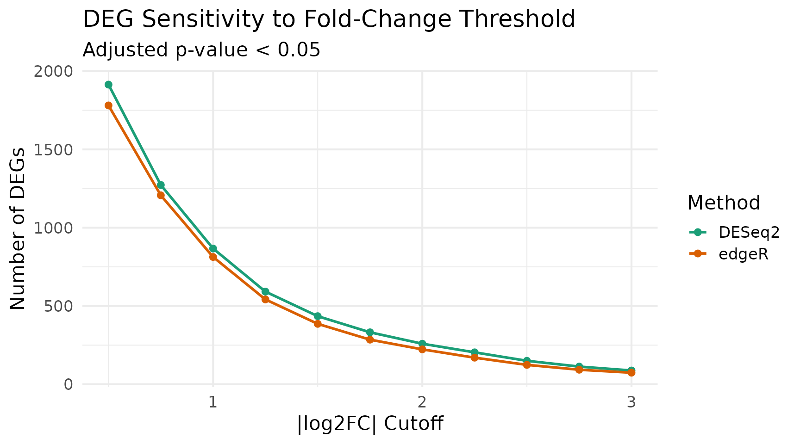
Correlation Heatmaps
Sample-sample correlation heatmaps can reveal whether both normalization approaches preserve the same correlation structure.
corr_deseq <- get_corr_heatmap(vista_deseq) +
ggtitle("DESeq2: Sample Correlation")
corr_edger <- get_corr_heatmap(vista_edger) +
ggtitle("edgeR: Sample Correlation")
corr_deseq + corr_edger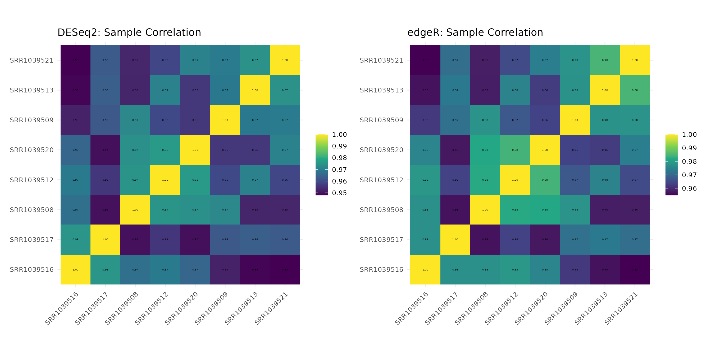
Summary and Recommendations
overlap <- length(intersect(all_deseq, all_edger))
union_size <- length(union(all_deseq, all_edger))
jaccard <- round(overlap / union_size, 3)
cat("━━━ Method Comparison Summary ━━━\n")
#> ━━━ Method Comparison Summary ━━━
cat("Comparison:", comp1, "\n\n")
#> Comparison: trt_VS_untrt
cat("DESeq2 DEGs:", length(all_deseq), "\n")
#> DESeq2 DEGs: 867
cat("edgeR DEGs:", length(all_edger), "\n")
#> edgeR DEGs: 813
cat("Shared DEGs:", overlap, "\n")
#> Shared DEGs: 792
cat("DESeq2-only:", length(deseq_only), "\n")
#> DESeq2-only: 75
cat("edgeR-only:", length(edger_only), "\n")
#> edgeR-only: 21
cat("Jaccard index:", jaccard, "\n")
#> Jaccard index: 0.892
cat("Fold-change Pearson r:", round(r_val, 3), "\n")
#> Fold-change Pearson r: 1Key takeaways
Fold-change estimates are highly correlated between DESeq2 and edgeR, as both methods model similar biological effects.
Significance calls differ at the margins. Genes near the decision boundary (p-value or fold-change cutoff) are more likely to be called by one method but not the other.
Core DEG sets overlap substantially. Genes with large fold-changes and low p-values are consistently identified by both methods.
Method-specific DEGs tend to have borderline statistics. Inspecting discordant genes (unique to one method) often reveals marginal significance in the other method as well.
For robust results, consider requiring DEGs to be called by both methods, or use the intersection as a high-confidence set and the union as a discovery set.
Session Info
sessionInfo()
#> R version 4.5.2 (2025-10-31)
#> Platform: x86_64-pc-linux-gnu
#> Running under: Ubuntu 24.04.3 LTS
#>
#> Matrix products: default
#> BLAS: /usr/lib/x86_64-linux-gnu/openblas-pthread/libblas.so.3
#> LAPACK: /usr/lib/x86_64-linux-gnu/openblas-pthread/libopenblasp-r0.3.26.so; LAPACK version 3.12.0
#>
#> locale:
#> [1] LC_CTYPE=C.UTF-8 LC_NUMERIC=C LC_TIME=C.UTF-8
#> [4] LC_COLLATE=C.UTF-8 LC_MONETARY=C.UTF-8 LC_MESSAGES=C.UTF-8
#> [7] LC_PAPER=C.UTF-8 LC_NAME=C LC_ADDRESS=C
#> [10] LC_TELEPHONE=C LC_MEASUREMENT=C.UTF-8 LC_IDENTIFICATION=C
#>
#> time zone: UTC
#> tzcode source: system (glibc)
#>
#> attached base packages:
#> [1] stats graphics grDevices datasets utils methods base
#>
#> other attached packages:
#> [1] patchwork_1.3.2 dplyr_1.2.0 ggplot2_4.0.2 VISTA_0.99.0
#> [5] BiocStyle_2.38.0
#>
#> loaded via a namespace (and not attached):
#> [1] splines_4.5.2 ggplotify_0.1.3
#> [3] tibble_3.3.1 R.oo_1.27.1
#> [5] polyclip_1.10-7 lifecycle_1.0.5
#> [7] rstatix_0.7.3 edgeR_4.8.2
#> [9] lattice_0.22-7 MASS_7.3-65
#> [11] backports_1.5.0 magrittr_2.0.4
#> [13] limma_3.66.0 sass_0.4.10
#> [15] rmarkdown_2.30 jquerylib_0.1.4
#> [17] yaml_2.3.12 otel_0.2.0
#> [19] ggtangle_0.1.1 EnhancedVolcano_1.28.2
#> [21] ggvenn_0.1.19 cowplot_1.2.0
#> [23] DBI_1.2.3 RColorBrewer_1.1-3
#> [25] abind_1.4-8 GenomicRanges_1.62.1
#> [27] purrr_1.2.1 R.utils_2.13.0
#> [29] BiocGenerics_0.56.0 msigdbr_25.1.1
#> [31] yulab.utils_0.2.4 tweenr_2.0.3
#> [33] rappdirs_0.3.4 gdtools_0.5.0
#> [35] IRanges_2.44.0 S4Vectors_0.48.0
#> [37] enrichplot_1.30.4 ggrepel_0.9.6
#> [39] tidytree_0.4.7 pkgdown_2.2.0
#> [41] codetools_0.2-20 DelayedArray_0.36.0
#> [43] DOSE_4.4.0 ggforce_0.5.0
#> [45] tidyselect_1.2.1 aplot_0.2.9
#> [47] farver_2.1.2 matrixStats_1.5.0
#> [49] stats4_4.5.2 Seqinfo_1.0.0
#> [51] jsonlite_2.0.0 Formula_1.2-5
#> [53] systemfonts_1.3.1 tools_4.5.2
#> [55] ggnewscale_0.5.2 treeio_1.34.0
#> [57] ragg_1.5.0 Rcpp_1.1.1
#> [59] glue_1.8.0 SparseArray_1.10.8
#> [61] xfun_0.56 DESeq2_1.50.2
#> [63] qvalue_2.42.0 MatrixGenerics_1.22.0
#> [65] withr_3.0.2 BiocManager_1.30.27
#> [67] fastmap_1.2.0 GGally_2.4.0
#> [69] digest_0.6.39 R6_2.6.1
#> [71] gridGraphics_0.5-1 textshaping_1.0.4
#> [73] colorspace_2.1-2 GO.db_3.22.0
#> [75] RSQLite_2.4.6 R.methodsS3_1.8.2
#> [77] utf8_1.2.6 tidyr_1.3.2
#> [79] generics_0.1.4 fontLiberation_0.1.0
#> [81] renv_1.1.4 data.table_1.18.2.1
#> [83] httr_1.4.8 htmlwidgets_1.6.4
#> [85] S4Arrays_1.10.1 scatterpie_0.2.6
#> [87] ggstats_0.12.0 pkgconfig_2.0.3
#> [89] gtable_0.3.6 blob_1.3.0
#> [91] S7_0.2.1 XVector_0.50.0
#> [93] clusterProfiler_4.18.4 htmltools_0.5.9
#> [95] fontBitstreamVera_0.1.1 carData_3.0-6
#> [97] bookdown_0.46 fgsea_1.36.2
#> [99] scales_1.4.0 Biobase_2.70.0
#> [101] png_0.1-8 ggfun_0.2.0
#> [103] knitr_1.51 reshape2_1.4.5
#> [105] nlme_3.1-168 curl_7.0.0
#> [107] cachem_1.1.0 stringr_1.6.0
#> [109] parallel_4.5.2 AnnotationDbi_1.72.0
#> [111] desc_1.4.3 pillar_1.11.1
#> [113] grid_4.5.2 vctrs_0.7.1
#> [115] ggpubr_0.6.2 car_3.1-5
#> [117] tidydr_0.0.6 cluster_2.1.8.1
#> [119] evaluate_1.0.5 cli_3.6.5
#> [121] locfit_1.5-9.12 compiler_4.5.2
#> [123] rlang_1.1.7 crayon_1.5.3
#> [125] ggsignif_0.6.4 labeling_0.4.3
#> [127] plyr_1.8.9 fs_1.6.6
#> [129] ggiraph_0.9.4 stringi_1.8.7
#> [131] viridisLite_0.4.3 BiocParallel_1.44.0
#> [133] assertthat_0.2.1 babelgene_22.9
#> [135] Biostrings_2.78.0 lazyeval_0.2.2
#> [137] GOSemSim_2.36.0 fontquiver_0.2.1
#> [139] Matrix_1.7-4 bit64_4.6.0-1
#> [141] KEGGREST_1.50.0 statmod_1.5.1
#> [143] SummarizedExperiment_1.40.0 igraph_2.2.2
#> [145] broom_1.0.12 memoise_2.0.1
#> [147] bslib_0.10.0 ggtree_4.0.4
#> [149] fastmatch_1.1-8 bit_4.6.0
#> [151] ape_5.8-1 gson_0.1.0